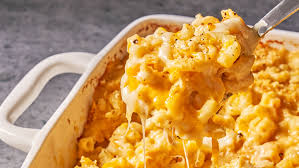

Mac n' Cheese

Old School Mac n' Cheese
Mac n' cheese just like grandma used to make it, including the potato chip crust!
It's easy to make, and perfect for a pot luck.
Ingredients
- 1 ¾ pounds whole-wheat macaroni
- ¾ cup butter
- ¾ cup all-purpose flour
- 6 cups milk, divided
- 1 tablespoon Worcestershire sauce
- 1 teaspoon mustard powder
- 1 teaspoon onion powder
- 1 teaspoon cayenne pepper
- salt and ground black pepper to taste
- 1 (8 ounce) package shredded Cheddar cheese, divided
- 3 (8 ounce) packages shredded American cheese
- 1 (8 ounce) bag potato chips (such as Lay's®), crushed
- 1 cup shredded Cheddar cheese
- ⅓ cup grated Parmesan cheese
- butter-flavored cooking spray
Directions
- Preheat oven to 375 degrees F (190 degrees C).
- Bring a large pot of lightly salted water to a boil. Cook elbow macaroni in the boiling water,
stirring occasionally until cooked through but firm to the bite, 8 minutes; drain.
- Melt butter in a large pot over medium-low heat. Slowly add flour to butter, whisking constantly;
cook until brown and the mixture no longer smells of flour, about 5 minutes. Pour 1 cup milk
into the flour mixture, whisking continually until fully incorporated, about 45 seconds;
repeat twice. Add remaining 3 cups milk to the mixture, whisking to incorporate. Stir
Worcestershire sauce, mustard powder, onion powder, and cayenne pepper into the mixture;
season with salt and black pepper.